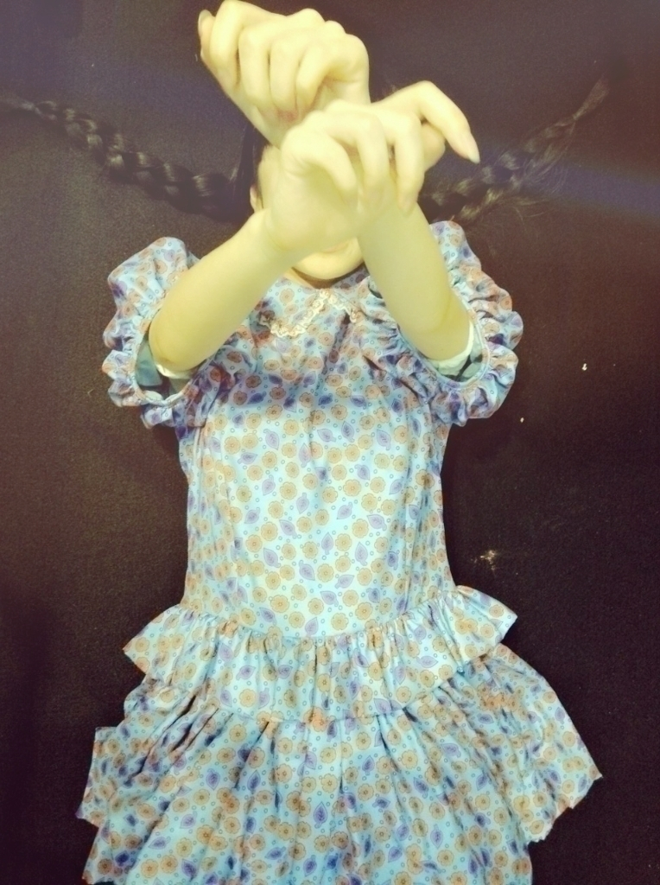
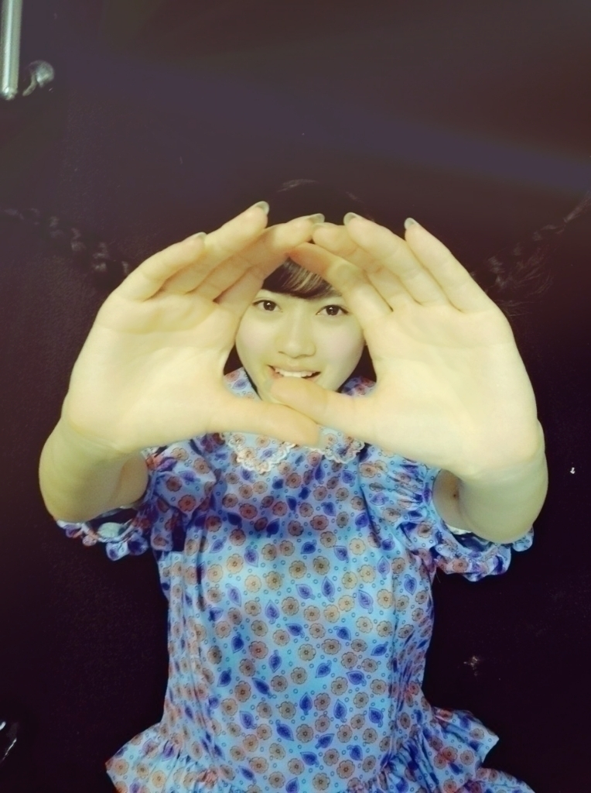

2015/0225Wed
おはようございます
こんにちは
こんばんは
寺田蘭世です。
バースデイライブ 西武ドーム○
お越し下さった皆様
スカパーを見て下さった皆様
ありがとうございました
とても楽しいライブになりました。
今回のライブ
本番始まる直前に
『このライブ絶対うまくいく』
何だかよくわからないんですが
ピピピっと何かきまして
そしたら見事的中
大きなミスや怪我もなく
凄く楽しめました( ˙-˙ )♪
何か、ピピピっときたと思ったら
まさかの業務連絡
研究生昇格
あのときは色んな感情が混ざり
うまく言葉にできなかったのですが
ここからスタートだと思っております
突然、みおなが
センターに選ばれた
めちゃめちゃ悔しいって
思ったあの日
いつの間にかまいちゅんも
正規メンバーへ、、、
アンダーライブに
まだ参加してなかった頃
ステージで楽しそうに
踊っていたメンバーを観て
羨ましくもあり
複雑で泣きながら
ステージを
ただ見てることしか
出来なかったあの日、、、
きぃちゃん
どんどん可愛くなって
ダンスも上手くなっていく
きぃちゃんをみて
愛おしく思うと同時に
何だか、遠く感じてしまったあの日
かりんは
研究生のリーダー的存在でした。
本当にしっかりしていて
常に何事にも真剣で全力
かりんちゃんが昇格って聞いた時
残された研究生は
何を思ったのだろう、、、
これからどうなるのかなって
正規メンバーへの
道のりは長くなりそうだなと
私は思ってしまいました。
私は、一足先に正規メンバーに
上がっていった子達みたいに
誇れるものも無いですし
不器用で、泣き虫で、、、
本当にまだまだです。
でも、今回正規メンバーに
なったという事で
少しぐらい
自分に自信をもって
行きたいなと思っています！
今欲しい物
自信！！！！
昇格したことを
2期生も泣いて喜んでくれて
卒業した2期生達からも
メールもらいました！
そして、1期生の方も
沢山おめでとうと
言ってくださりました
畠中さんはステージ上で
抱きしめてくださったり
白石さんには
これからも一緒に頑張ろうねと
言っていただけたり
永島さんはメールをくれました！
本当に嬉しかった
そして、スタッフさん
ライブ終了後おめでとうと
言ってくださいました！！
2.22 乃木坂46の記念日に
西武ドームと言う素晴らしい場所で
昇格発表一生忘れられない記念日です
泣きながら
たまたま近くに居た絢音ちゃんと
花道を手を繋ぎながら
走り抜けたあの瞬間
スタート

これからも宜しくお願い致します！！

2015/02/25 09:20
コメント(702)
昇格おめでとう！
このまま勢いの止まることなく突き進んでください
このまま勢いの止まることなく突き進んでください
らんぜおめでとう！！
これぞまさに、らんぜの勢い止まらんぜ！！
ライブもめっちゃ良かったよ！！楽しすぎた*\(^o^)/*
これぞまさに、らんぜの勢い止まらんぜ！！
ライブもめっちゃ良かったよ！！楽しすぎた*\(^o^)/*
昇格おめでとー！！
昇格本当におめでとうー
らんぜさんおめでとう＼(^o^)／
言葉にならんぜ！！！！！！！
言葉にならんぜ！！！！！！！
ライブお疲れ様！
昇格発表はアディショナルタイムの逆転ゴールみたいだったよ！
昇格発表はアディショナルタイムの逆転ゴールみたいだったよ！
蘭世昇格おめでとー！
これからも蘭世応援してるよ！！！
頑張って
これからも蘭世応援してるよ！！！
頑張って
本当におめでとー(^.^)
その場で感動して泣いちゃったよ
その場で感動して泣いちゃったよ
あの涙はファン全員が泣ける涙だと思うよ！
せいたんも755て色々言ってるし昇格おめでとう！
バースデーライブお疲れ様でした。
自分はせいたん推しだから最後のライブを生で見ることが出来てよかった
蘭世もこれから大変だけど乃木坂46のイチメンバーとして頑張ってね
せいたんも755て色々言ってるし昇格おめでとう！
バースデーライブお疲れ様でした。
自分はせいたん推しだから最後のライブを生で見ることが出来てよかった
蘭世もこれから大変だけど乃木坂46のイチメンバーとして頑張ってね
おめでとう！
Birthday Live、あの瞬間、色々な想いで、自分も溢れる涙を止められませんでした。
これからかも知れないけど、まずはおめでとう。
素直に嬉しいよ。
Birthday Live、あの瞬間、色々な想いで、自分も溢れる涙を止められませんでした。
これからかも知れないけど、まずはおめでとう。
素直に嬉しいよ。
らんらん(*^_^*)
大好きだよ❤︎
頑張れ(^_^)
いつも応援してるから☆
らんらんなら何だってできるよ(^_^)
横浜握手会行くから、いっぱい昇格のお祝いしてあげるよ(笑)
これからも、らんらんラブだよ❤︎
SOMA☆
大好きだよ❤︎
頑張れ(^_^)
いつも応援してるから☆
らんらんなら何だってできるよ(^_^)
横浜握手会行くから、いっぱい昇格のお祝いしてあげるよ(笑)
これからも、らんらんラブだよ❤︎
SOMA☆
昇格おめでとう！
めったにコメントしないけど、モバメやブログで寺田さんの頑張りとか気持ちをちゃんと見てるよ！
本当に嬉しいぜ！
これからもセンター目指して頑張って下さい！
応援してるよ(^_^)/
めったにコメントしないけど、モバメやブログで寺田さんの頑張りとか気持ちをちゃんと見てるよ！
本当に嬉しいぜ！
これからもセンター目指して頑張って下さい！
応援してるよ(^_^)/
バースデーライブお疲れ様(*´▽｀*)
そして昇格おめでとうo(^▽^)o
いろいろな感情があって今までつらかったと思うけど、これからは正規メンバーとして頑張ってね( ^^)/
応援してるよ！
そして昇格おめでとうo(^▽^)o
いろいろな感情があって今までつらかったと思うけど、これからは正規メンバーとして頑張ってね( ^^)/
応援してるよ！
昇格おめでとうございます！
自信を持って頑張ってね！
応援してます！
自信を持って頑張ってね！
応援してます！
ライブお疲れ様*\(^o^)/*
最高のライブをありがと♪
そして、そして！
昇格おめでとーーーーーーー(((o(*ﾟ▽ﾟ*)o)))
ついに！ついにこの日が来たね♪
2/22は乃木坂46の誕生日であり、正規メンバー寺田蘭世の誕生日だーー*\(^o^)/*
蘭世たちが気にしていた事は他のメンバーも気にしていた事だったはず。辛い事も多かっただろうけど、みんなで乗り越えることが出来たね♪
本当の意味でここからがスタートだと思う！
4年目は2期生旋風を巻き起こしてやろう‼︎笑
蘭世の勢いは止まらないんでしょ？笑
やったれ！応援してるぞーーーー*\(^o^)/*
蘭世の勢い止まらんぜ‼︎♪
最高のライブをありがと♪
そして、そして！
昇格おめでとーーーーーーー(((o(*ﾟ▽ﾟ*)o)))
ついに！ついにこの日が来たね♪
2/22は乃木坂46の誕生日であり、正規メンバー寺田蘭世の誕生日だーー*\(^o^)/*
蘭世たちが気にしていた事は他のメンバーも気にしていた事だったはず。辛い事も多かっただろうけど、みんなで乗り越えることが出来たね♪
本当の意味でここからがスタートだと思う！
4年目は2期生旋風を巻き起こしてやろう‼︎笑
蘭世の勢いは止まらないんでしょ？笑
やったれ！応援してるぞーーーー*\(^o^)/*
蘭世の勢い止まらんぜ‼︎♪
おはようございます！
Birthday Live、お疲れさまでした！
すごく寒い西武ドームだったけど、それを感じさせないぐらいに楽しすぎてあっという間の７時間半でした！
そしてやっぱり一番感動したのは、研究生が全員昇格の発表を聞いた瞬間でした！
メンバーのみんなも自分のことのように大喜びして、ボクもあの瞬間は本当に嬉しくて涙が出そうになりましたよ♪♪
らんらんは絶対にセンターになれる人だと思ってますので、ココからまた新たなスタートですね！
次のアンダラでは正規アンダーメンバーとして最高のパフォーマンスを見せてくれることを期待してますからね (^_-)〜☆
Birthday Live、お疲れさまでした！
すごく寒い西武ドームだったけど、それを感じさせないぐらいに楽しすぎてあっという間の７時間半でした！
そしてやっぱり一番感動したのは、研究生が全員昇格の発表を聞いた瞬間でした！
メンバーのみんなも自分のことのように大喜びして、ボクもあの瞬間は本当に嬉しくて涙が出そうになりましたよ♪♪
らんらんは絶対にセンターになれる人だと思ってますので、ココからまた新たなスタートですね！
次のアンダラでは正規アンダーメンバーとして最高のパフォーマンスを見せてくれることを期待してますからね (^_-)〜☆
昇格おめでと！
昇格ほんとよかったね。
ライブのパフォーマンスもよかったよ。
成長したなあ、、なんて思った。
自信もって大丈夫だよ。
がんばってねー。
ライブのパフォーマンスもよかったよ。
成長したなあ、、なんて思った。
自信もって大丈夫だよ。
がんばってねー。
らんぜ！たまらんぜ！
おめでとう！！
おめでとう！！
蘭世おめでとぉ～( ^-^)ノ∠※。.:*:・'°☆
現地で業務連絡で寺………ってとこでもう沸いてたwww
６人は特に複雑だったよね(゜_゜;)
みおなのセンターだったり、復帰の伊織のいきなりの選抜だったり、リーダー的な存在だったかりん↑の昇格で２期生回の乃木天が不安視されたりと、ツラいことが多かった分、これからが楽しいから、どんどん蘭世の良いとこアピってね♪
現地で業務連絡で寺………ってとこでもう沸いてたwww
６人は特に複雑だったよね(゜_゜;)
みおなのセンターだったり、復帰の伊織のいきなりの選抜だったり、リーダー的な存在だったかりん↑の昇格で２期生回の乃木天が不安視されたりと、ツラいことが多かった分、これからが楽しいから、どんどん蘭世の良いとこアピってね♪
バースデーライブお疲れさま♪
正規メンバー昇格おめでとう！
んーたまらんぜ♡
これからも応援します(๑•̀ω•́ฅ)
今日も１日頑張りまいまい♡
正規メンバー昇格おめでとう！
んーたまらんぜ♡
これからも応援します(๑•̀ω•́ฅ)
今日も１日頑張りまいまい♡
蘭世おはよう( ´ ▽ ` )ﾉ
昇格おめでとう！ホントに素敵な業務連絡でした
まぁ純奈の名前が出た瞬間に昇格だ！ってすぐに分かったけどね（笑）
蘭世の、泣きながらコメントしてた姿を見ると感動しました
自分に誇れるものが無いのなら、ゆっくりでいいから見つけていけばいいし、焦んなくていいと思うよ
それこそ、今度のアンダラの期間中に見つかるかもしれないし、いつ見つかるかもわからないから、蘭世のペースで頑張ってこ
これからも応援してるよ
昇格おめでとう！ホントに素敵な業務連絡でした
まぁ純奈の名前が出た瞬間に昇格だ！ってすぐに分かったけどね（笑）
蘭世の、泣きながらコメントしてた姿を見ると感動しました
自分に誇れるものが無いのなら、ゆっくりでいいから見つけていけばいいし、焦んなくていいと思うよ
それこそ、今度のアンダラの期間中に見つかるかもしれないし、いつ見つかるかもわからないから、蘭世のペースで頑張ってこ
これからも応援してるよ
蘭世ちゃんほんとに昇格おめでとう！
まだ蘭世ちゃんのこと好きになって日が浅いけどこれから握手会とか行って応援します＼(^o^)／
ライブお疲れさまでした
とりあえずアンダラ絶対行くからね！
それではまた！
まだ蘭世ちゃんのこと好きになって日が浅いけどこれから握手会とか行って応援します＼(^o^)／
ライブお疲れさまでした
とりあえずアンダラ絶対行くからね！
それではまた！
ガンバレ〜らんぜ‼️
こんにちは！
らんぜライブお疲れ様！
会場には行けなくて、まだスカパーも見れてないんだけど、すぐ見るから！(笑)
そして正規メンバー昇格おめでとう！
ほんとやっとだね！
研究生って枠組はほんとらんぜに不安とか心配とか与え続けてたと思うけど、これからはアンダーとして頑張ろうね！
らんぜも言ってたけど、もっと自信もっていいと思うよ！
だからこそ正規メンバーに昇格したんだし！
早くらんぜが自信もってパフォーマンスしてる姿見たいな♪
今年からは色々行けると思うから行ったときにはまた最高のパフォーマンス見せてね！
これからも頑張ってね！
北海道からいつも応援してます！！
らんぜライブお疲れ様！
会場には行けなくて、まだスカパーも見れてないんだけど、すぐ見るから！(笑)
そして正規メンバー昇格おめでとう！
ほんとやっとだね！
研究生って枠組はほんとらんぜに不安とか心配とか与え続けてたと思うけど、これからはアンダーとして頑張ろうね！
らんぜも言ってたけど、もっと自信もっていいと思うよ！
だからこそ正規メンバーに昇格したんだし！
早くらんぜが自信もってパフォーマンスしてる姿見たいな♪
今年からは色々行けると思うから行ったときにはまた最高のパフォーマンス見せてね！
これからも頑張ってね！
北海道からいつも応援してます！！
らんらん！！( ;ω; )
本当に昇格おめでとう！！！
昇格記念日を西武ドームで迎えることができて嬉しいです！！
ライブ中も双眼鏡でずーっとらんらん探してました〜( ;ω; )
らんぜー！！！って何回も言ったの聞こえたからわからないけど、私はずっとらんらんを応援してますo(^▽^)o
らんらん、本当に昇格おめでとう！！
文面下手くそでごめんなさい…
おはようございます。
正規メンバーへの昇格おめでとうございます！
これからのご活躍楽しみにしています。
正規メンバーへの昇格おめでとうございます！
これからのご活躍楽しみにしています。
らんらん、ライブお疲れさま
よかったね！
発表の時、ジーンときて
周りを見たらみんなウルウルしてた
ここから上げていこうね！
よかったね！
発表の時、ジーンときて
周りを見たらみんなウルウルしてた
ここから上げていこうね！
ライブお疲れ様！
それから、正規メンバー昇格おめでとう(^○^)
業務連絡の瞬間、蘭世が今まで頑張ってきたことを思ったら自然と涙が溢れてきたよ！レッスン〜本番まで頑張ってきて良かったね(^ ^) 西武ドームまで行って本当に良かった。
これからもっといっぱい活躍できるように願ってます！
それから、正規メンバー昇格おめでとう(^○^)
業務連絡の瞬間、蘭世が今まで頑張ってきたことを思ったら自然と涙が溢れてきたよ！レッスン〜本番まで頑張ってきて良かったね(^ ^) 西武ドームまで行って本当に良かった。
これからもっといっぱい活躍できるように願ってます！
研究生→正規メンバーの昇格おめでとう(^○^)！！！
らんぜは、面白いで、応援するわ！！！
らんぜは、面白いで、応援するわ！！！
らんぜ〜
ライブおつかれさまでした！
とってもいいライブでした！
そして、昇格おめでとう>_<！！私までもらい泣きしてしまった…。これからもがんばって(o^^o)
ライブおつかれさまでした！
とってもいいライブでした！
そして、昇格おめでとう>_<！！私までもらい泣きしてしまった…。これからもがんばって(o^^o)
らんぜ♡ 初コメです。よろしくね♪
昇格おめでとーヾ(≧∇≦)イェイ
本当におめでとう！！
そして、３周年バースデーライブお疲れさまでした(^_^)b
めっちゃ楽しすぎて、寒さも忘れてあっという間でしたよ♪
これからも頑張ってね！応援してます！！
昇格おめでとーヾ(≧∇≦)イェイ
本当におめでとう！！
そして、３周年バースデーライブお疲れさまでした(^_^)b
めっちゃ楽しすぎて、寒さも忘れてあっという間でしたよ♪
これからも頑張ってね！応援してます！！
昇格おめでとうございます♪
もっと自信を持って大丈夫だと思いますよ！
二期生の方の頑張りは誰も分かっています
これからもっと忙しくなると思いますが、体調には気を付けて頑張って下さい(^o^)
もっと自信を持って大丈夫だと思いますよ！
二期生の方の頑張りは誰も分かっています
これからもっと忙しくなると思いますが、体調には気を付けて頑張って下さい(^o^)
昇格おめでとう（＾_＾）
らんぜ。
バースデーライブ本当にお疲れ様でした。
今回のライブ、研究生にとってはどんなものだったのかな。卒業していった1期生のポジションに入ってその世界観を壊さないように、でも自分の色を出した子もいたと思います。答えはないけど、今の乃木坂を1期生・2期生全員で駆け抜けた3周年記念ライブだったのではないかと思います。結果、大成功です。あの悪条件の中で大きなミスや心配事もなくよくやり抜いたと思います。まだまだ研究生の出番は少ないとは思いますが、今までのライブの中で一番輝いていたと思いますよ。本当にお疲れ様でした。
そして何と言っても、正規メンバーへの昇格ですね。
本当におめでとう。色々辛かったはずだしその辛さはやっぱり研究生本人たち以上に実感出来る人はいないので、軽々しく語れないですけど、これからは自信を持ってより一層頑張ってくださいね。
乃木坂ちゃん3歳おめでとう。
乃木坂ちゃんありがとう。
バースデーライブ本当にお疲れ様でした。
今回のライブ、研究生にとってはどんなものだったのかな。卒業していった1期生のポジションに入ってその世界観を壊さないように、でも自分の色を出した子もいたと思います。答えはないけど、今の乃木坂を1期生・2期生全員で駆け抜けた3周年記念ライブだったのではないかと思います。結果、大成功です。あの悪条件の中で大きなミスや心配事もなくよくやり抜いたと思います。まだまだ研究生の出番は少ないとは思いますが、今までのライブの中で一番輝いていたと思いますよ。本当にお疲れ様でした。
そして何と言っても、正規メンバーへの昇格ですね。
本当におめでとう。色々辛かったはずだしその辛さはやっぱり研究生本人たち以上に実感出来る人はいないので、軽々しく語れないですけど、これからは自信を持ってより一層頑張ってくださいね。
乃木坂ちゃん3歳おめでとう。
乃木坂ちゃんありがとう。
ライブお疲れ様！
改めて昇格おめでとう‼
この時をずっと待ってたよー
センター目指すなら、ここがやっとスタート地点だね‼
蘭世らしさ全開で頑張ってほしいな♪
次の見せ場はアンダラかな？
期待してるよ‼
そうそう、撮影会行くからよろしくね～
あと、liveの時タオル掲げた時に指さしてくれてありがとー(^^)b
めちゃめちゃ嬉しかった＼(^^)／＼(^^)／＼(^^)／
改めて昇格おめでとう‼
この時をずっと待ってたよー
センター目指すなら、ここがやっとスタート地点だね‼
蘭世らしさ全開で頑張ってほしいな♪
次の見せ場はアンダラかな？
期待してるよ‼
そうそう、撮影会行くからよろしくね～
あと、liveの時タオル掲げた時に指さしてくれてありがとー(^^)b
めちゃめちゃ嬉しかった＼(^^)／＼(^^)／＼(^^)／
昇格、本当におめでとうございます。嬉しそうにバックステージに向かって駆けてくるらんぜの姿を見て、嬉し泣きをしました。
何かを語るときのらんぜのハキハキした姿が好きなので、これからも前に出ていって下さい。
アンダーライブサードシーズン、何としてもチケットを手に入れて参加するので、更に成長した姿を見せて下さい。
何かを語るときのらんぜのハキハキした姿が好きなので、これからも前に出ていって下さい。
アンダーライブサードシーズン、何としてもチケットを手に入れて参加するので、更に成長した姿を見せて下さい。
蘭世！昇格おめでとう！会場で昇格を聞いたときほんとに自分のことのようにうれしくて、涙がでてしまいました。本当に本当におめでとう。蘭世の勢いとまらんぜ！
蘭世！昇格おめでとう！会場で昇格を聞いたときほんとに自分のことのようにうれしくて、涙がでてしまいました。本当に本当におめでとう。蘭世の勢いとまらんぜ！
蘭世ーーー！！！( ･ω･ )
バースデーライブ、お疲れ様でした！！！
7時間半という長丁場だったはずなのに、全く長いとか疲れたとか感じさせない、達成感、満足感のあるライブでした(੭ु⁾⁾ọ̶̶̷̥᷅ωọ̶̶̷̥᷅)੭ु⁾⁾
自分たちは寒さ対策してたから平気だったけど、蘭世たちはどうしてあんなに平気な顔してられたの⁉︎
ほんと蘭世たちすごいなぁ…って思いましたヽ(ﾟ∀ﾟ )ﾉ
一つ残念だったのは蘭世がアリーナのこっちの方を全然向かなかったことです(;д;)
蘭世いつも反対側の方向いて手を振ってて、こっちはーーー⁉︎ってなってました(笑)
それでも蘭世をたくさん見つけられたので、すごい良かったですけど(笑)
「人はなぜ走るのか？」では最後のダンスの所を蘭世がピョンピョン跳ねてたのを見られたのが一番良かったです(੭ु´͈ ᐜ `͈)੭ु⁾⁾
そしてそして…研究生からの正規メンバーへの昇格おめでとう！！！☆*:.｡. o(≧▽≦)o .｡.:*☆
蘭世は研究生でしか出来ない事があるって言って頑張ってたけど、本当は辛かったんだね(;д;)
「認められてないんじゃないか」って言葉を聞いた時はもう…(´；ω；｀)
ライブで感動して泣く場面何度かあったけど、あの蘭世の昇格の瞬間が一番泣きました(笑)
本当に本当に、良かったね(´；ω；｀)
蘭世おめでとう！！！！！
本当はすぐ感想をコメントしたかったんだけど、ライブの後体調崩しちゃって、ずっと吐き気と高熱にうなされてたんだ(笑)
原因は体調が万全じゃない時に食べた生牡蠣だそうですf^_^;
寒さ対策は万全だったから全然寒くなかったんだけどね(笑)
せっかくだから新しく更新されるブログにコメントしてみた！(笑)
本調子に戻ったらまたコメントしに来るねf^_^;
らんぜの勢い？
とまらんぜ( ˙-˙ )
バースデーライブ、お疲れ様でした！！！
7時間半という長丁場だったはずなのに、全く長いとか疲れたとか感じさせない、達成感、満足感のあるライブでした(੭ु⁾⁾ọ̶̶̷̥᷅ωọ̶̶̷̥᷅)੭ु⁾⁾
自分たちは寒さ対策してたから平気だったけど、蘭世たちはどうしてあんなに平気な顔してられたの⁉︎
ほんと蘭世たちすごいなぁ…って思いましたヽ(ﾟ∀ﾟ )ﾉ
一つ残念だったのは蘭世がアリーナのこっちの方を全然向かなかったことです(;д;)
蘭世いつも反対側の方向いて手を振ってて、こっちはーーー⁉︎ってなってました(笑)
それでも蘭世をたくさん見つけられたので、すごい良かったですけど(笑)
「人はなぜ走るのか？」では最後のダンスの所を蘭世がピョンピョン跳ねてたのを見られたのが一番良かったです(੭ु´͈ ᐜ `͈)੭ु⁾⁾
そしてそして…研究生からの正規メンバーへの昇格おめでとう！！！☆*:.｡. o(≧▽≦)o .｡.:*☆
蘭世は研究生でしか出来ない事があるって言って頑張ってたけど、本当は辛かったんだね(;д;)
「認められてないんじゃないか」って言葉を聞いた時はもう…(´；ω；｀)
ライブで感動して泣く場面何度かあったけど、あの蘭世の昇格の瞬間が一番泣きました(笑)
本当に本当に、良かったね(´；ω；｀)
蘭世おめでとう！！！！！
本当はすぐ感想をコメントしたかったんだけど、ライブの後体調崩しちゃって、ずっと吐き気と高熱にうなされてたんだ(笑)
原因は体調が万全じゃない時に食べた生牡蠣だそうですf^_^;
寒さ対策は万全だったから全然寒くなかったんだけどね(笑)
せっかくだから新しく更新されるブログにコメントしてみた！(笑)
本調子に戻ったらまたコメントしに来るねf^_^;
らんぜの勢い？
とまらんぜ( ˙-˙ )
頑張れらんぜ！
昇格おめでとう(⌒▽⌒)
らんぜー！
バースデーライブお疲れ様でした！
スタンド席でちょっと距離あったけどらんぜのこともしっかり見えたよ！
昇格おめでとう(^^)
昇格発表のときの大歓声凄かったね！それだけ研究生も乃木坂の大切な一員ってこと(^^)
これまで研究生という立場で複雑なこもとたくさんあったと思うけど、腐らずやってきた成果だね！
感謝祭のMCやのぎ天での活躍も見たよ！
らんぜらしさを大切に頑張っていってほしい(*^-^*)
ここがまた1つのスタートだね！
これからも頑張っていきましょう！
バースデーライブお疲れ様でした！
スタンド席でちょっと距離あったけどらんぜのこともしっかり見えたよ！
昇格おめでとう(^^)
昇格発表のときの大歓声凄かったね！それだけ研究生も乃木坂の大切な一員ってこと(^^)
これまで研究生という立場で複雑なこもとたくさんあったと思うけど、腐らずやってきた成果だね！
感謝祭のMCやのぎ天での活躍も見たよ！
らんぜらしさを大切に頑張っていってほしい(*^-^*)
ここがまた1つのスタートだね！
これからも頑張っていきましょう！
らんぜちゃんおはようございます！
改めてライブお疲れ様でしたm(_ _)m
そして改めて正規メンバー昇格おめでとうございますm(_ _)m
ピピピッと来るって何かいいですね！
なんと言うか、とても可愛らしい表現の中にいろいろ隠れていそうで(^^)
らんぜちゃんはすごい負けず嫌いなんですね。悔しいって感情が少しも無かったら、絶対伸びないと自分は思ってますし、その感情により泣く熱さはとてもいいと思います！
らんぜちゃんの悔しさとかは自分には計り知れないものだと思いますが、自分も大学の部活で同学年で唯一試合に出してもらえない日々が続き、グランドで輝くみんなの姿を羨ましさと悔しさを滲ませながら、応援していたのでなんとなくわかります。
少しだけ長く生きている自分がちょっとだけ偉そうなことを言いますね。自信を持つこと、それはすごく大事です。口では「自信ありません」とか言っていても、実際自信ある人からはそれなりオーラみたいなものを感じます。全てのことに自信を持って臨むのは難しいと思います。だから、自分が磨くべきだと感じることを磨いて、自信をつけてほしいなと思います。
らんぜちゃんのこれからの活躍を応援させてください！
ライブお疲れ様です
昇格おめでとうございます！
蘭世ちゃんよかったですよ!!
ここからまたがんばれ!!(･∀-)b
昇格おめでとうございます！
蘭世ちゃんよかったですよ!!
ここからまたがんばれ!!(･∀-)b
お疲れ様でした。
おめでとうございます！
自信をもって 活動してくださいね。
乃木坂show の説教部屋も良かったです。
おめでとうございます！
自信をもって 活動してくださいね。
乃木坂show の説教部屋も良かったです。
昇格おめでとう＼(^^)／
昇格の話を聞いた時は本当に嬉しかった。
昇格したテラダさんに会いに、また握手会に行きます(^^ゞ
昇格の話を聞いた時は本当に嬉しかった。
昇格したテラダさんに会いに、また握手会に行きます(^^ゞ
らんぜちゃんおはよう( ˘ω˘ )
バースデーライブ見に行ったよー！おつかれさま！
始まったら寒さも全然気にならないぐらい、すごくいいライブだった！
それと研究生昇格ほんとにおめでとう！
みんなが泣いてるの見て、僕ももらい泣きしちゃった笑
研究生のみんなが正規メンバーになれたあの瞬間に立ち会えたことがほんとに嬉しかった(´ｰ｀)
これからもずっと応援するね！
ほんとにバースデーライブおつかれさま！
バースデーライブ見に行ったよー！おつかれさま！
始まったら寒さも全然気にならないぐらい、すごくいいライブだった！
それと研究生昇格ほんとにおめでとう！
みんなが泣いてるの見て、僕ももらい泣きしちゃった笑
研究生のみんなが正規メンバーになれたあの瞬間に立ち会えたことがほんとに嬉しかった(´ｰ｀)
これからもずっと応援するね！
ほんとにバースデーライブおつかれさま！
最近俺の中で二期生きてるなと思った矢先の昇格でめっちゃ嬉しかった。
みんな泣いてるの見てものすごくもらい泣きした
ずっと応援してる！
みんな泣いてるの見てものすごくもらい泣きした
ずっと応援してる！


これからも蘭世の勢いとまらんぜ